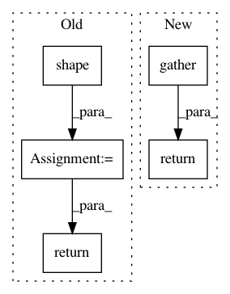

a4d9c3a0656639f00ea0050e6535f7bf547d8719,research/object_detection/meta_architectures/faster_rcnn_meta_arch.py,FasterRCNNMetaArch,_gather_instance_masks,#FasterRCNNMetaArch#Any#Any#,866
Before Change
masks: a 3-D float32 tensor with shape [K, mask_height, mask_width].
k = tf.shape(instance_masks)[0]
num_mask_classes = tf.shape(instance_masks)[1]
instance_mask_height = tf.shape(instance_masks)[2]
instance_mask_width = tf.shape(instance_masks)[3]
classes = tf.reshape(classes, [-1])
instance_masks = tf.reshape(instance_masks, [
-1, instance_mask_height, instance_mask_width
])
return tf.gather(instance_masks,
tf.range(k) * num_mask_classes + tf.to_int32(classes))
def _extract_rpn_feature_maps(self, preprocessed_inputs):
Extracts RPN features.
After Change
instance_masks = tf.reshape(instance_masks, [-1, height, width])
classes = tf.to_int32(tf.reshape(classes, [-1]))
gather_idx = tf.range(k) * num_classes + classes
return tf.gather(instance_masks, gather_idx)
def _extract_rpn_feature_maps(self, preprocessed_inputs):
Extracts RPN features.
In pattern: SUPERPATTERN
Frequency: 3
Non-data size: 5
Instances
Project Name: tensorflow/models
Commit Name: a4d9c3a0656639f00ea0050e6535f7bf547d8719
Time: 2018-04-13
Author: lzc@google.com
File Name: research/object_detection/meta_architectures/faster_rcnn_meta_arch.py
Class Name: FasterRCNNMetaArch
Method Name: _gather_instance_masks
Project Name: OpenNMT/OpenNMT-tf
Commit Name: 83ea5808a36de70b86c07bcb02211fd07041532e
Time: 2019-09-03
Author: guillaume.klein@systrangroup.com
File Name: opennmt/models/sequence_to_sequence.py
Class Name:
Method Name: align_tokens_from_attention
Project Name: GPflow/GPflow
Commit Name: f01a7761d70d727ef4ea42c05464c2f85679ecd1
Time: 2018-12-27
Author: art.art.v@gmail.com
File Name: gpflow/kernels/base.py
Class Name: Kernel
Method Name: slice_cov